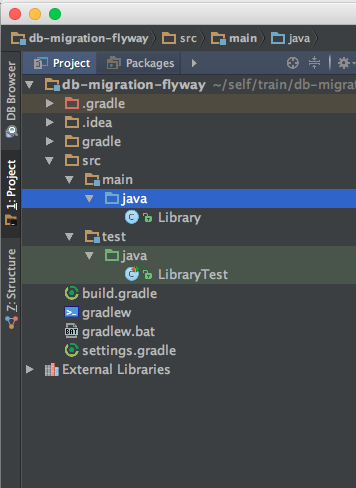
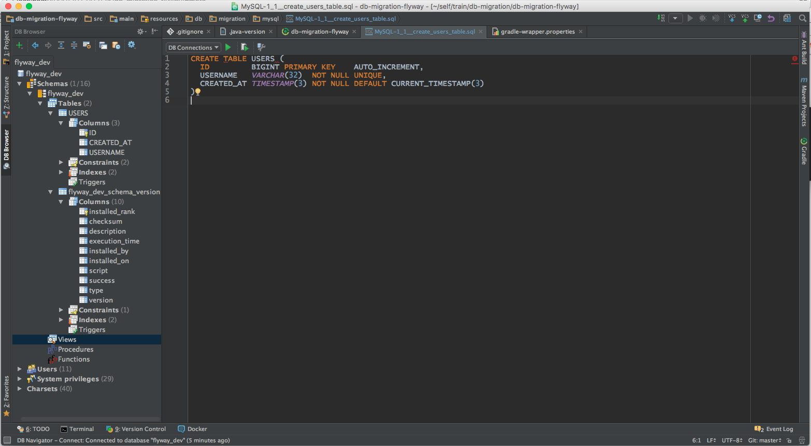

对于数据迁移的概念，相信大家已经都比较熟悉。那么，什么是数据迁移？为什么需要数据迁移？在这里就不再做相关分享啦~。接下来主要分享一下数据迁移工具 Flyway 使用。
Flyway is the Apache v2 licensed open-source tool that makes database migrations easy. It strongly favors simplicity and convention over configuration.
Flyway 是一款开源的数据库迁移工具，它认为简单和约定优于配置。没有繁琐的配置，有 6 个主要基本命令：Migrate, Clean, Info, Validate, Baseline 和 Repair。
Flyway received the highest distinction on the Thoughtworks Technology Radar by being placed in the adopt category.
如何使用 Flyway？
Flyway支持很多种和应用集成的方法，这里主要分享一下Gradle集成Flyway的使用。
Setup Repo db-migration-flyway：
|
|

Add Gradle Flyway plugin
Change
build.gradlefile content123456789101112buildscript {repositories {maven { url "https://plugins.gradle.org/m2/" }}dependencies {classpath "gradle.plugin.com.boxfuse.client:flyway-release:4.1.1"}}apply plugin: "idea"apply plugin: 'java'apply plugin: "org.flywaydb.flyway"Build repo
1$ ./gradlew build
Config Flyway
Change [
build.gradle] file content123456789101112131415161718192021222324252627282930buildscript {repositories {maven { url "https://plugins.gradle.org/m2/" }}dependencies {classpath "gradle.plugin.com.boxfuse.client:flyway-release:4.1.1"}}apply plugin: "idea"apply plugin: 'java'apply plugin: "org.flywaydb.flyway"flyway {driver = 'com.mysql.jdbc.Driver'url = "jdbc:mysql://127.0.0.1:3306/flyway_dev"user = 'mysql'password = 'mysql'table = 'flyway_dev_schema_version'locations = ["filesystem:${projectDir}/src/main/resources/db/migration/mysql"]sqlMigrationPrefix = 'MySQL-'}repositories {jcenter()}dependencies {compile 'mysql:mysql-connector-java:5.1.34'}Build repo
1$ ./gradlew build
Add Migration Scripts
Create file MySQL-1_1__create_users_table.sql
12345CREATE TABLE USERS (ID BIGINT PRIMARY KEY AUTO_INCREMENT,USERNAME VARCHAR(32) NOT NULL UNIQUE,CREATED_AT TIMESTAMP(3) NOT NULL DEFAULT CURRENT_TIMESTAMP(3));Create Mysql Database
flyway_devwith usermysqland passwordmysqlMigration
1$ ./gradlew flywayMigrate -i
配置管理
对于DEV、QA、TEST、STAGE、PROD针对不同的环境，需要会使用不一样的数据库配置。
在工程目录下创建文件
config/dev/db.properties,config/test/db.properties,config/prod/db.properties:1234567891011121314// config/dev/db.propertiesdb.url=jdbc:mysql://127.0.0.1:3306/flyway_devdb.user=mysqldb.password=mysql// config/test/db.propertiesdb.url=jdbc:mysql://127.0.0.1:3306/flyway_testdb.user=mysqldb.password=mysql// config/prod/db.propertiesdb.url=jdbc:mysql://127.0.0.1:3306/flyway_proddb.user=mysqldb.password=mysql修改
build.gradle文件123456789101112131415161718192021222324252627282930313233buildscript {repositories {maven { url "https://plugins.gradle.org/m2/" }}dependencies {classpath "gradle.plugin.com.boxfuse.client:flyway-release:4.1.1"}}apply plugin: "idea"apply plugin: 'java'apply plugin: "org.flywaydb.flyway"def properties = new Properties()properties.load(project.file("config/${env}/db.properties").newReader())flyway {driver = 'com.mysql.jdbc.Driver'url = properties.get('db.url')user = properties.get('db.user')password = properties.get('db.password')table = 'flyway_dev_schema_version'locations = ["filesystem:${projectDir}/src/main/resources/db/migration/mysql"]sqlMigrationPrefix = 'MySQL-'}repositories {jcenter()}dependencies {compile 'mysql:mysql-connector-java:5.1.34'}Create Mysql Database
flyway_testwith usermysqland passwordmysql- Migration test env1$ ./gradlew -Penv=test flywayMigrate -i
写在最后
这里只是简单的分享了一下，Gradle 和 Flyway 的集成。Flyway 还有很多功能值得去探索…